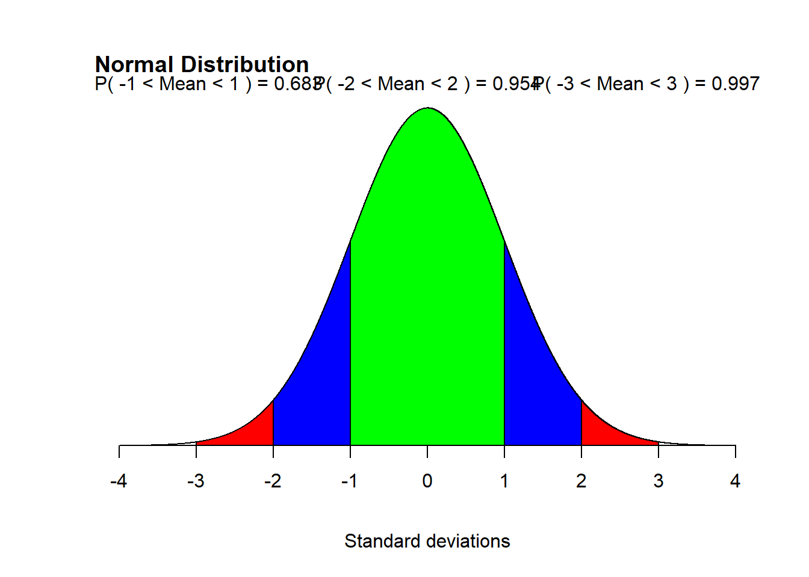
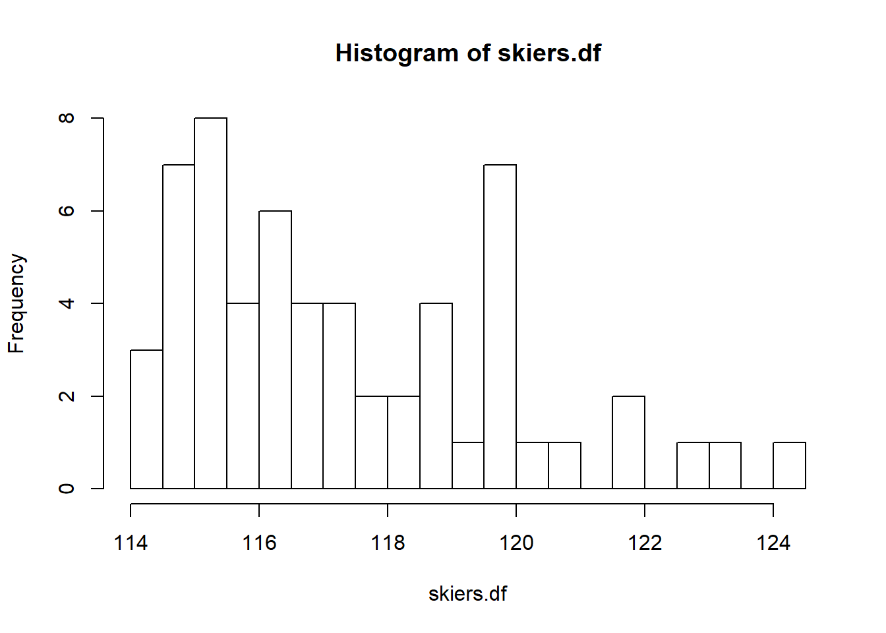

Chapter 5
The Standard Deviation as a Ruler and the Normal Model
Standard Deviation measurement gives us a consistent measure for comparing completely different things e.g. long jump distances versus 200m sprints.
Standardising with Z scores
Measuring the distance from the mean in terms of standard deviations give a relative measurement that can standardise data analysis.
To standardise the value, take the data point, subtract the mean from it and then divide it by the standard deviation. If the data point is close to the mean, the standardised value will be small, the further away from the mean the larger the value.
This is called the z score. So z-score is just another way of saying standardised value
$ z = s$
If the z-score is 2.1 then the value is 2.1 standard deviations above the mean. If the z-score is -0.9 then the value is 0.9 standard deviations below the mean.
Be careful about positive and negative z-scores, since sometimes negative is better e.g. faster time in race and sometimes positive is better e.g. weight of barbell lifted.
Example:
Bode Miller “super combined” winter olympics 2010.
Slalom: Mean = 52.67 seconds; standard deviation =1.614 Downhill: Mean = 116.26 seconds, s = 1.914
Bode: Slalom = 51.01 seconds Downhill = 113.91
Which time was more impressive?
Z Slalom = 51.01 - 52.67 / 1.614
cat("Slalom z-score = ",(51.01 -52.67)/1.614,"\n")## Slalom z-score = -1.028501cat("Downhill z-score = ",(113.91 - 116.26)/1.914,"\n")## Downhill z-score = -1.227795The Downhill was more impressive since it was 1.2 deviations below the mean (and less time is better!).
Shifting and scaling
If you subtract a constant from each data point (say you want to calculate how over/underweight people are, so you subtract the recommended weight from each person e.g. 74kg for men) then the Median and Mean will change, but the IQR will remain the same, as will the range, as will the standard deviation.
Rescaling to adjust the scale
If you do a conversion between kilograms and pounds, for example, then all the measures get multipled by the same amount - so the range will increase by 2.2, the IQR will increase by 2.2, Standard deviation & the Mean will increase by 2.2.
Shifting, Scaling and on z-scores
When we standardise data, we delete the Mean from every value while calculating z-scores, we are basically resetting the Mean to zero.
BEcause we are dividing by s, the standard deviation will also be divided by s which means the standard deviation becomes 1!
So:
- Standardising in z-scores does not change the shape of the distribution of a variable
- Standardising in z-scores makes the mean zero (0)
- Standardising in z-scores makes the standard deviation 1
Example - SAT / ACT tests
SAT test results: IQ1: 1530 IQ3: 1850 IQR = 1850 - 1530 = 320
So to be in the top quarter she needs over 1850.
Larger group: SAT mean is 1500 and standard deviation is 250.
For the same group, ACT average is 20.8 with a standard deviation of 4.8.
The z-score for SAT then is 1850 - 1500 / 250 = 350/250 = 1.4 so you need 1.4 standard deviations higher to get in.
For ACT, what do we know? We know the standard deviation, the mean but not the target.
so we need to know:
for ACT, standard deviation is 4.8 and you need 1.4 s of this above the mean, = 6.72, so average of 20.8 + 6.72 points = 27.52
Normal models
z-score = -1 -> means the data point is one standard deviation BELOW the mean z-score = 1 -> means the data point is one standard deviation ABOVE the mean
As a rough guide, symmetrical data will have at around half of its cases (data points) will have z-scores of between -1 and 1 (compare that to the normla model where this is 68%)
So if the z-score is 3, then we have something that is pretty rare while a z-score of 6 or more shouts out for specific attention.
SO how do we know how big a z-score to expect? We can make a model of the data distribution. Models are simplified pictures of reality. They don’t show all the details, but enough to be able to make predictions, find anomolies etc. Without a model we have only the data we have collected, and can’t say anything more.
“Normal models” are also known as “Bell-shaped curves”. These work for distributions that are unimodal and roughly symmetric.
There is a “normal” model for every combination of mean and standard deviation. For Standard deviation we use lower-case “sigma” and for mean we use “mu”So:
$ N(, ) $
The numbers here are represetned by mu and sigma because they are PARAMETERS of the model and not actual numbers from data.
So if data is modeled with a Normal model and then standardised, the z-score is is calculated as:
$z = $
If the data is standardised first, then the Normal Model is simply:
N(0,1)
BUT DO NOT USE A NORMAL MODEL ON ANY DISTRIBUTION THAT IS NOT NORMAL
How do we check? We make a histogram which shows that the data is unimodal and symmetrical
Using the 68-95-99.7 rule
In the normal model, roughly 68% of the data is found within +/- 1 standard deviation, rouhgly 95% is found within +/- 2 standard deviations and 99.7% is found within +/- 3 standard deviations.
All rules together (note - to get the lines straight, needed a large sample size):
# Demo of Normal Distribution
mean=0; sd=1
lb1=-1; ub1=1
lb2=-2; ub2=2
lb3=-3; ub3=3
x <- seq(-4,4,length=10000)*sd + mean
hx <- dnorm(x,mean,sd)
plot(x, hx, type="n", xlab="Standard deviations", ylab="", axes=FALSE)
# Note - separate out title as different code and set it so it moves to top-left corner
title("Normal Distribution", adj = 0, line = 1)
i <- x >= lb3 & x <= ub3
lines(x, hx)
polygon(c(lb3,x[i],ub3), c(0,hx[i],0), col="red")
i <- x >= lb2 & x <= ub2
lines(x, hx)
polygon(c(lb2,x[i],ub2), c(0,hx[i],0), col="blue")
i <- x >= lb1 & x <= ub1
lines(x, hx)
polygon(c(lb1,x[i],ub1), c(0,hx[i],0), col="green")
area <- pnorm(ub1, mean, sd) - pnorm(lb1, mean, sd)
result1 <- paste("P(",lb1,"< Mean <",ub1,") =",
signif(area, digits=3))
mtext(result1,3,adj = 0)
area <- pnorm(ub2, mean, sd) - pnorm(lb2, mean, sd)
result2 <- paste("P(",lb2,"< Mean <",ub2,") =",
signif(area, digits=3))
mtext(result2,3,adj = 0.5)
area <- pnorm(ub3, mean, sd) - pnorm(lb3, mean, sd)
result3 <- paste("P(",lb3,"< Mean <",ub3,") =",
signif(area, digits=3))
mtext(result3,3,adj = 1)
axis(1, at=seq(-4, 4, 1), pos=0)
And here is how applied to “real-world” example of IQ
#example borrowed from here: https://www.statmethods.net/advgraphs/probability.html
# Children's IQ scores are normally distributed with a
# mean of 100 and a standard deviation of 15. What
# proportion of children are expected to have an IQ between
# 80 and 120?
mean=100; sd=15
lb=80; ub=120
x <- seq(-4,4,length=100)*sd + mean
hx <- dnorm(x,mean,sd)
plot(x, hx, type="n", xlab="IQ Values", ylab="", axes=FALSE)
# Note - separate out title as different code and set it so it moves to top-left corner
title("Normal Distribution", adj = 0, line = 1)
i <- x >= lb & x <= ub
lines(x, hx)
polygon(c(lb,x[i],ub), c(0,hx[i],0), col="red")
area <- pnorm(ub, mean, sd) - pnorm(lb, mean, sd)
result <- paste("P(",lb,"< IQ <",ub,") =",
signif(area, digits=3))
mtext(result,3)
axis(1, at=seq(40, 160, 20), pos=0)Example
A test that students take has a mean of 500 and standard deviation of 100 points. If I get a score of 600, how did I do?
- Model the distribution using model N(500,100)
- The model will look like this:
# Demo of Test results
#Change the mean and the standard deviation to the numbers above
mean=500; sd=100
lb1=400; ub1=600
lb2=300; ub2=700
lb3=200; ub3=800
x <- seq(-4,4,length=100)*sd + mean
hx <- dnorm(x,mean,sd)
plot(x, hx, type="n", xlab="Standard deviations", ylab="", axes=FALSE)
# Note - separate out title as different code and set it so it moves to top-left corner
title("Normal Distribution", adj = 0, line = 1)
i <- x >= lb3 & x <= ub3
lines(x, hx)
polygon(c(lb3,x[i],ub3), c(0,hx[i],0), col="red")
i <- x >= lb2 & x <= ub2
lines(x, hx)
polygon(c(lb2,x[i],ub2), c(0,hx[i],0), col="blue")
i <- x >= lb1 & x <= ub1
lines(x, hx)
polygon(c(lb1,x[i],ub1), c(0,hx[i],0), col="green")
area <- pnorm(ub1, mean, sd) - pnorm(lb1, mean, sd)
result1 <- paste("P(",lb1,"< Mean <",ub1,") =",
signif(area, digits=3))
mtext(result1,3,adj = 0, line=-2)
area <- pnorm(ub2, mean, sd) - pnorm(lb2, mean, sd)
result2 <- paste("P(",lb2,"< Mean <",ub2,") =",
signif(area, digits=3))
mtext(result2,3,adj = 0.5, line = -1)
area <- pnorm(ub3, mean, sd) - pnorm(lb3, mean, sd)
result3 <- paste("P(",lb3,"< Mean <",ub3,") =",
signif(area, digits=3))
mtext(result3,3,adj = 1, line = 0)
axis(1, at=seq(0, 1000, 100), pos=0)We can see that the score of 600 is exactly one standard deviation away from the mean and that means that above 600 we have half of the cases that fall outside the standard deviation of +/- i.e. 100% - 68% / 2 =16% have a higher score than 600.
Finding Normal Percentiles
What if the score was 675 instead of 600? How many students would score higher than 680? This is harder to say as it is more than one standard deviation away from the mean but less than two.
Instead, we can use a lookup table (or formula in software) to find this out.
Take the z-score and find out what percentile that is in.
The z-score is 680 - 500 / 100 = 1.80
And the corresponding percentile is 0.964 = 96.4% of scores are less than z-score of 1.8, so in top 3.6% of students!
Normal probability plot
These are used to find out whether you can use the Normal model or not when analysing the data.
If the normal probability plot is straight, then it’s OK to use the normal model, if not then you can’t. Very skewed data will normally have data points that deviate from a straight line.
So a normal probability plot takes the z-scores of the data and compares each one to same number of data points in a normal distribution i.e. the lowest z-score value in the data is compared to the expected lowest z-score in normal distribution.
In the example below, we can see how closely the datapoints follow the line (randomly generated every time).
# create sample data
x <- rt(100, df=3)
# normal fit
qqnorm(x); qqline(x)QUESTIONS
Q9. Normal cattle
Mean weight of Angus bulls = 1152 pounds. Thw weights of the animals can be described with a normal model with a standard deviation $$ of 84 pounds.
What percent of bulls weight: a) over 1250 pounds b) under 1200 pounds c) between 1000 and 1100 pounds?
Answer Think! Show! Tell!
Think!
Need to work out the z-scores for the different weights, and work out what percentile the weight falls into to then work out %
Plan
Z-score formula is $ $
mean=1152; sd=84
zscoreA = (1250 - mean) / sd
zscoreA## [1] 1.166667zscoreB = (1200 - mean) / sd
zscoreB## [1] 0.5714286zscoreC1 = (1000 - mean) / sd
zscoreC1## [1] -1.809524zscoreC2 = (1100 - mean) / sd
zscoreC2## [1] -0.6190476#Then to get pnorm:
cat("The percentage of bulls over 1250 pounds is: ", 1 - pnorm(zscoreA),"\n")## The percentage of bulls over 1250 pounds is: 0.1216725cat("The percentage of bulls under 1200 pounds is: ", pnorm(zscoreB),"\n")## The percentage of bulls under 1200 pounds is: 0.7161454cat("The percentage of bulls between 1000 and 1100 is: ", pnorm(zscoreC2) - pnorm(zscoreC1),"\n")## The percentage of bulls between 1000 and 1100 is: 0.2327577Can do this graphically with Tigerstats. Firstly over 1250 pounds:
# Or use the tigerstats package and the pnorm GC function
library(tigerstats) ## Loading required package: abd## Loading required package: nlme##
## Attaching package: 'nlme'## The following object is masked from 'package:dplyr':
##
## collapse## Loading required package: lattice## Loading required package: grid## Loading required package: mosaic## Loading required package: ggformula## Loading required package: ggstance##
## Attaching package: 'ggstance'## The following objects are masked from 'package:ggplot2':
##
## geom_errorbarh, GeomErrorbarh##
## New to ggformula? Try the tutorials:
## learnr::run_tutorial("introduction", package = "ggformula")
## learnr::run_tutorial("refining", package = "ggformula")## Loading required package: mosaicData## Loading required package: Matrix## Registered S3 method overwritten by 'mosaic':
## method from
## fortify.SpatialPolygonsDataFrame ggplot2##
## The 'mosaic' package masks several functions from core packages in order to add
## additional features. The original behavior of these functions should not be affected by this.
##
## Note: If you use the Matrix package, be sure to load it BEFORE loading mosaic.##
## Attaching package: 'mosaic'## The following object is masked from 'package:Matrix':
##
## mean## The following objects are masked from 'package:dplyr':
##
## count, do, tally## The following object is masked from 'package:ggplot2':
##
## stat## The following objects are masked from 'package:stats':
##
## binom.test, cor, cor.test, cov, fivenum, IQR, median,
## prop.test, quantile, sd, t.test, var## The following objects are masked from 'package:base':
##
## max, mean, min, prod, range, sample, sum## Welcome to tigerstats!
## To learn more about this package, consult its website:
## http://homerhanumat.github.io/tigerstats##
## Attaching package: 'tigerstats'## The following object is masked from 'package:reshape2':
##
## tips pnormGC(1250, region="above", mean,
sd,graph=TRUE)
## [1] 0.1216725Then under 1200 pounds:
# Or use the tigerstats package and the pnorm GC function
library(tigerstats)
pnormGC(1200, region="below", mean,
sd,graph=TRUE)## [1] 0.7161454Between 1000 and 1100
pnormGC(c(1000,1100),region="between",mean,
sd,graph=TRUE)## [1] 0.2327577Question 10 - IQs revisited
Based on Normal model N(100,16) what percentage of scores would you expect to be:
- over 80
- under 90
- between 112 and 132
meanIQ = 100; sdIQ = 16
zscoreIQa = (80 - meanIQ) / sdIQ
cat("Percentage of students scoring OVER 80: ", (1 - pnorm(zscoreIQa))*100,"%", "\n")## Percentage of students scoring OVER 80: 89.43502 %zscoreIQb = (90 - meanIQ) / sdIQ
cat("Percentage of students scoring UNDER 90: ", pnorm(zscoreIQb)*100, "%", "\n")## Percentage of students scoring UNDER 90: 26.59855 %zscoreIQc1 = (112 - meanIQ) / sdIQ
zscoreIQc2 = (132 - meanIQ) / sdIQ
cat("Percentage of students scoring BETWEEN 112 and 132: ", (pnorm(zscoreIQc2) - pnorm(zscoreIQc1))*100,"%", "\n")## Percentage of students scoring BETWEEN 112 and 132: 20.38772 %Question 33 - Small bull
Back to previous question about bulls, what would be unusually small in the model N(1152,84)?
Depends what is meant by “unusually small”. Assume that unusually small is 2 deviations below the mean and lower (ie. bottom 2.5% of all animals. Since the standard deviation is 84 pounds, that would be:
1152 - (84 * 2)## [1] 984Question 39
Downhill skiers.
http://www.espn.com/olympics/winter/2010/results/_/sport/1/event/2
The data is as follows:
skiers.df <- c(114.31, 114.38, 114.4, 114.52, 114.64, 114.67,
114.82, 114.84, 114.87, 114.88, 115.02, 115.19, 115.19, 115.26,
115.29, 115.4, 115.44, 115.49, 115.58, 115.71, 115.74, 115.81,
116.04, 116.11, 116.19, 116.2, 116.29, 116.35, 116.58, 116.66,
116.69, 116.69, 117.02, 117.19, 117.21, 117.44, 117.72, 117.91,
118.08, 118.43, 118.58, 118.71, 118.82, 118.85, 119.21, 119.52,
119.61, 119.65, 119.76, 119.8, 119.84, 119.99, 120.12, 120.58,
121.67, 121.72, 122.57, 123.36, 124.44)
summary(skiers.df)## Min. 1st Qu. Median Mean 3rd Qu. Max.
## 114.3 115.3 116.7 117.3 119.0 124.4- mean is 117.34 seconds, standard deviation = 2.465 seconds. What percentage of times are below 114.875?
# First calculate the z-score for 114.875 using model N(117.34, 2.465)
SkiMean = 117.34; SkiSD = 2.465
zSkiers <- (114.875 - SkiMean) / SkiSD
zSkiers## [1] -1cat ("The percentile of the zscore is: ", pnorm(-1)*100,"%")## The percentile of the zscore is: 15.86553 %library(tigerstats)
pnormGC(114.875, region="below", SkiMean,
SkiSD,graph=TRUE)## [1] 0.1586553- What is the actual percent of times below 114.875?
# We can just count the rows that are less than 114.875 and work out the percentage of all the 59 cases.
# Checking manually is 9 rows
# Using R, we can use this formula. Note that the "Sum" is summing the number of rows NOT the values
sum(skiers.df <114.875)## [1] 9cat("The percentage of skiers below 114.875 is: ",(sum(skiers.df <114.875) /59)*100,"%" )## The percentage of skiers below 114.875 is: 15.25424 %- The two percentages don’t agree because we have used a model and this doesn’t take into account the actual number of cases and is making standardised assumptions. The data is not perfectly symmetrical as the normal model is. If it was 15.87% it would be 9.36 people, which is impossible.
NOTE - the book is wrong! It is assuming only 8 people went faster that 114.875, but according to the data it is 9! Furthermore, the data it presents is rounded compared to the source data they provide the link to so there is no way of getting the correct number to this question!
- When making a histogram, we note that the data is not symmetrical and we shouldn’t have used the normal model to analyse the data. The data is fairly heavily skewed to the right.
hist(skiers.df, breaks = 20)